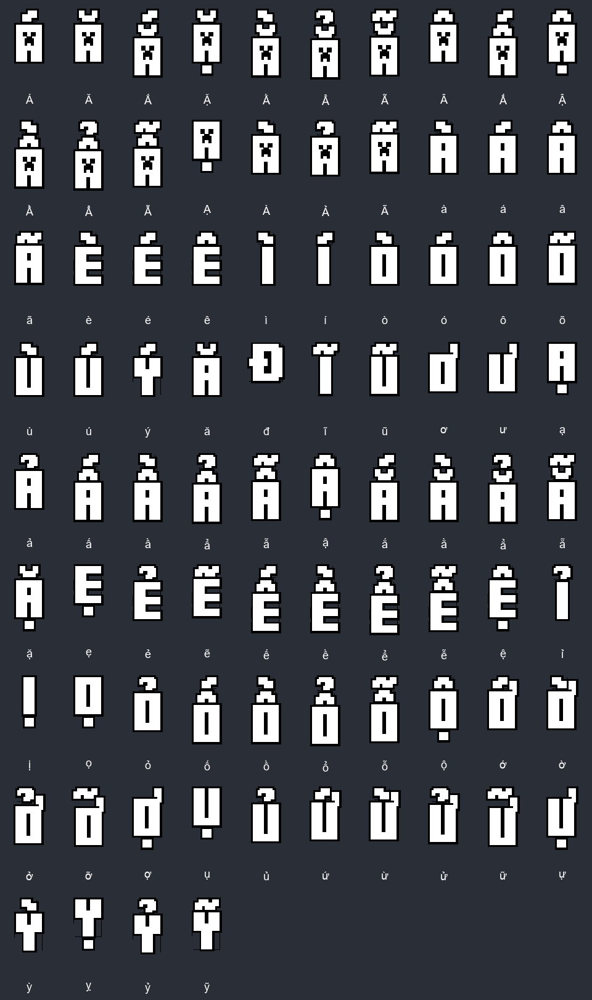
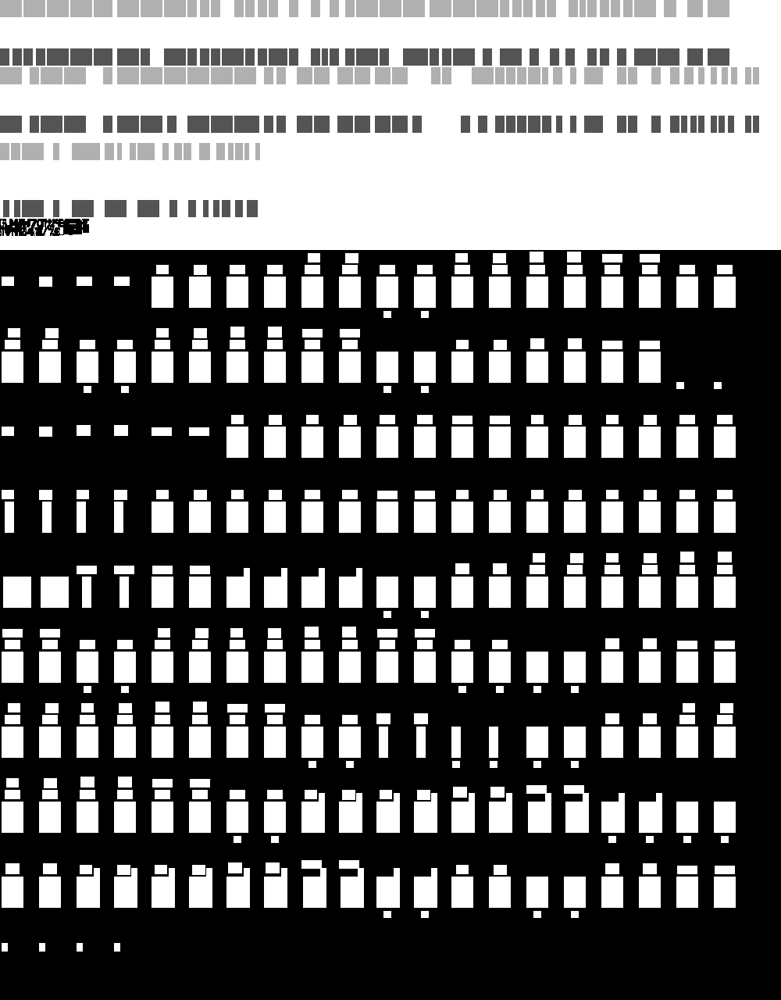

Giữ nguyên hình khối nguồn. Mở rộng atlas theo chiều cao; tự điều chỉnh UV và cấu hình. Có 84 ký tự Việt theo quy ước nguồn, gồm 17 chữ A có mặt Creeper. Mặt trên/dưới/cạnh và viền vẫn dùng vùng 320 hàng pixel gốc.
140 texture/overlay khớp mẫu UV; 84 ảnh đối chiếu mặt trước, góc nghiêng và mặt sau trên 4 texture đều khớp nguồn từng pixel. Chưa kiểm tra trực tiếp trong Blockbench.

Mở flat.png ở kích thước thật · Tọa độ các ô
